Chapter 12 Visualization of Functional Enrichment Result
The enrichplot package implements several visualization methods to help interpreting enrichment results. It supports visualizing enrichment results obtained from DOSE (Yu et al. 2015), clusterProfiler (Yu et al. 2012), ReactomePA (Yu and He 2016) and meshes. Both over representation analysis (ORA) and gene set enrichment analysis (GSEA) are supported.
Many of these visualization methods were first implemented in DOSE and rewrote from scratch using ggplot2. If you want to use old methods3, you can use the doseplot package.
12.1 Bar Plot
Bar plot is the most widely used method to visualize enriched terms. It depicts the enrichment scores (e.g. p values) and gene count or ratio as bar height and color.

12.2 Dot plot
Dot plot is similar to bar plot with the capability to encode another score as dot size.
edo2 <- gseNCG(geneList, nPerm=10000)
p1 <- dotplot(edo, showCategory=30) + ggtitle("dotplot for ORA")
p2 <- dotplot(edo2, showCategory=30) + ggtitle("dotplot for GSEA")
plot_grid(p1, p2, ncol=2)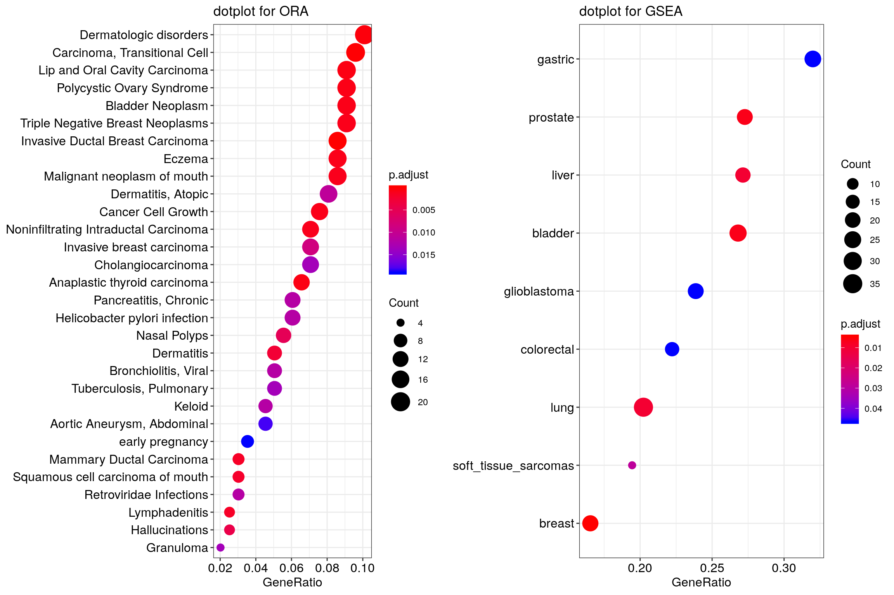
12.3 Gene-Concept Network
Both the barplot and dotplot only displayed most significant enriched terms,
while users may want to know which genes are involved in these significant
terms.
In order to consider the potentially biological complexities in which a gene may belong to multiple annotation categories and provide information of numeric changes if available, we developed cnetplot function to extract the complex association.
The cnetplot depicts the linkages of genes and biological concepts (e.g. GO terms or KEGG pathways) as a network. GSEA result is also supported
with only core enriched genes displayed.
## convert gene ID to Symbol
edox <- setReadable(edo, 'org.Hs.eg.db', 'ENTREZID')
cnetplot(edox, foldChange=geneList)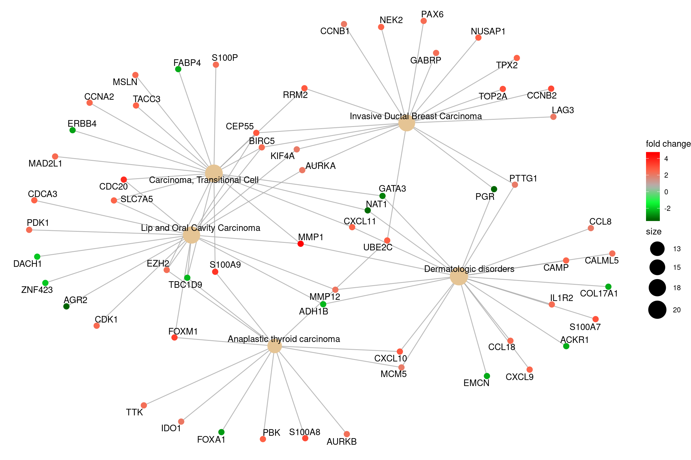
## categorySize can be scaled by 'pvalue' or 'geneNum'
cnetplot(edox, categorySize="pvalue", foldChange=geneList)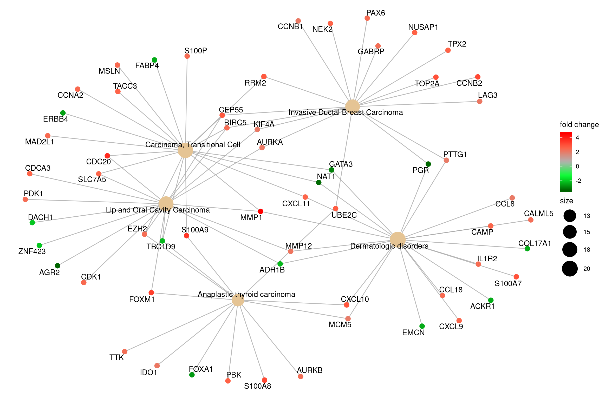
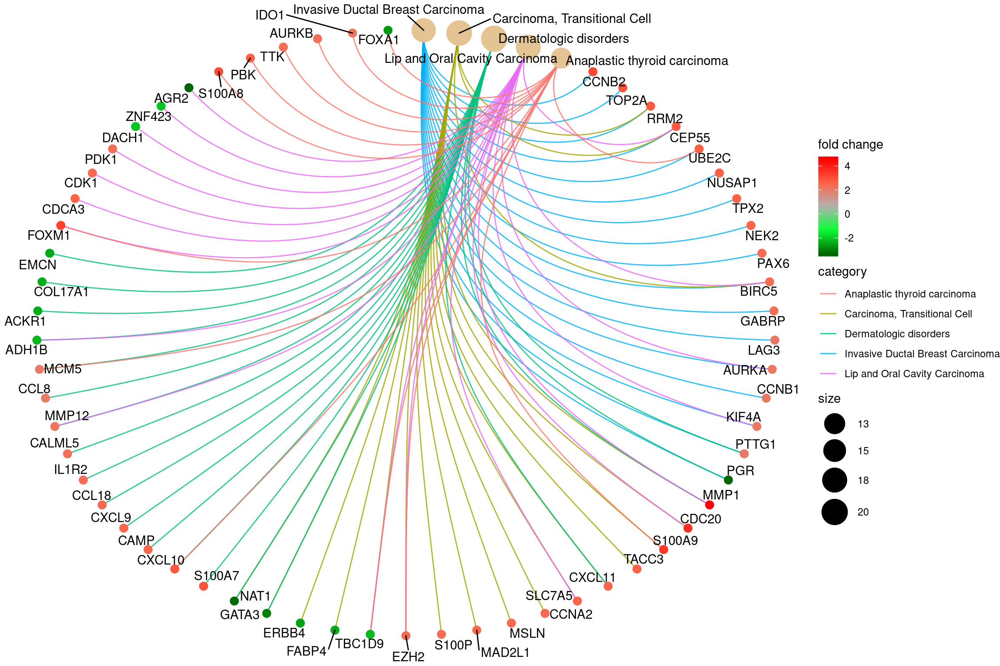
If you would like label subset of the nodes, you can use the node_label parameter, which supports 4 possible selections (i.e. “category”, “gene”, “all” and “none”), as demonstrated in Figure 12.1.
p1 <- cnetplot(edox, node_label="category")
p2 <- cnetplot(edox, node_label="gene")
p3 <- cnetplot(edox, node_label="all")
p4 <- cnetplot(edox, node_label="none")
cowplot::plot_grid(p1, p2, p3, p4, ncol=2, labels=LETTERS[1:4])Figure 12.1: Labelling nodes by selected subset. gene category (A), gene name (B), both gene category and gene name (C, default) and not to label at all (D).
12.4 Heatmap-like functional classification
The heatplot is similar to cnetplot, while displaying the relationships as a
heatmap. The gene-concept network may become too complicated if user want to
show a large number significant terms. The heatplot can simplify the result
and more easy to identify expression patterns.
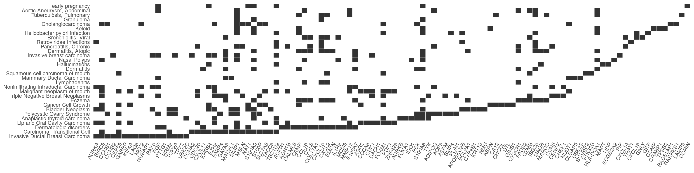
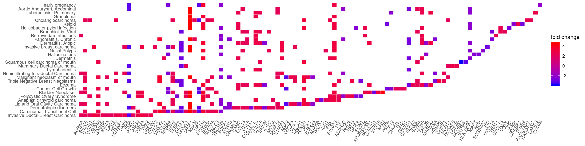
12.5 Enrichment Map
Enrichment map organizes enriched terms into a network with edges connecting overlapping gene sets. In this way, mutually overlapping gene sets are tend to cluster together, making it easy to identify functional module.
The emapplot function supports results obtained from hypergeometric test and gene set enrichment analysis.
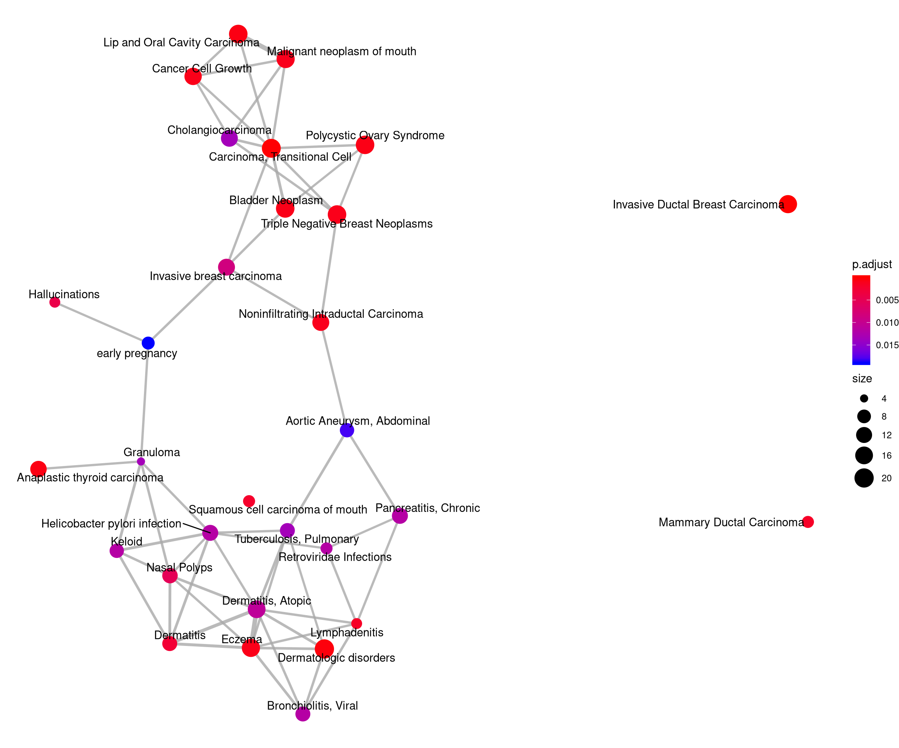
12.6 UpSet Plot
The upsetplot is an alternative to cnetplot for visualizing the complex
association between genes and gene sets. It emphasizes the gene overlapping
among different gene sets.
Figure 12.2: Upsetplot for over-representation analysis.
For over-representation analysis, upsetplot will calculate the overlaps among different gene sets as demonstrated in Figure 12.2. For GSEA result, it will plot the fold change distributions of different categories (e.g. unique to pathway, overlaps among different pathways).
Figure 12.3: Upsetplot for gene set enrichment analysis.
12.7 ridgeline plot for expression distribution of GSEA result
The ridgeplot will visualize expression distributions of core enriched genes
for GSEA enriched categories. It helps users to interpret up/down-regulated pathways.
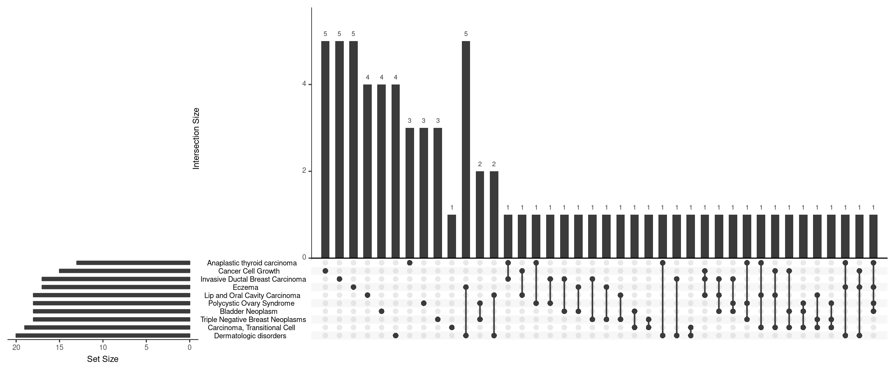
12.8 running score and preranked list of GSEA result
Running score and preranked list are traditional methods for visualizing GSEA result. The enrichplot package supports both of them to visualize the distribution of the gene set and the enrichment score.
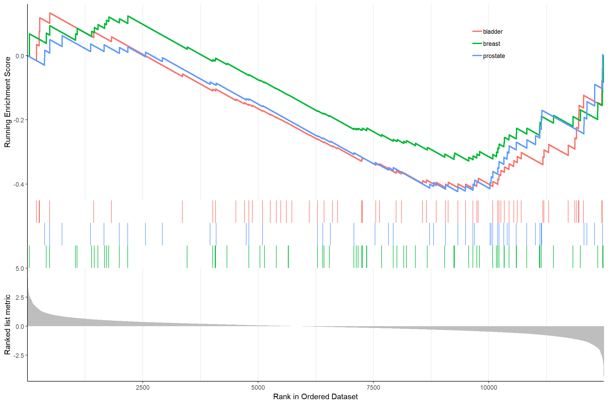
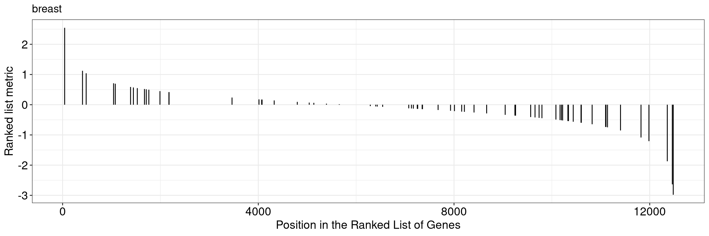
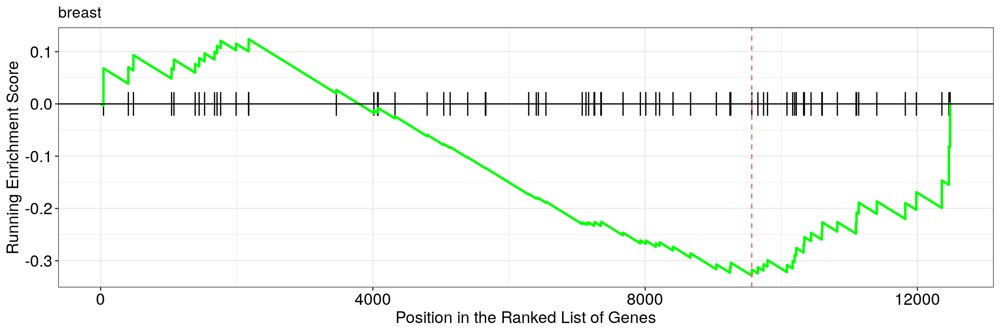
Another method to plot GSEA result is the gseaplot2 function:
The gseaplot2 also supports multile gene sets to be displayed on the same figure:
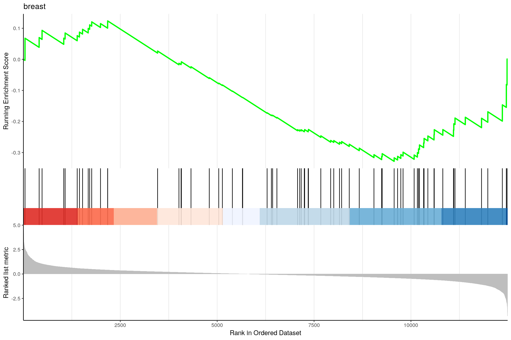
User can also displaying the pvalue table on the plot via pvalue_table
parameter:
gseaplot2(edo2, geneSetID = 1:3, pvalue_table = TRUE,
color = c("#E495A5", "#86B875", "#7DB0DD"), ES_geom = "dot")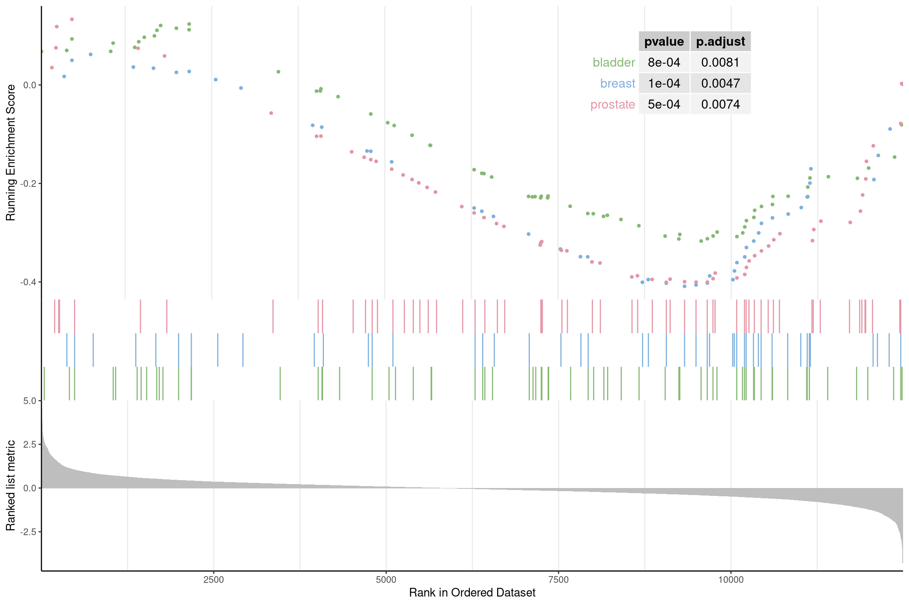
User can specify subplots to only display a subset of plots:
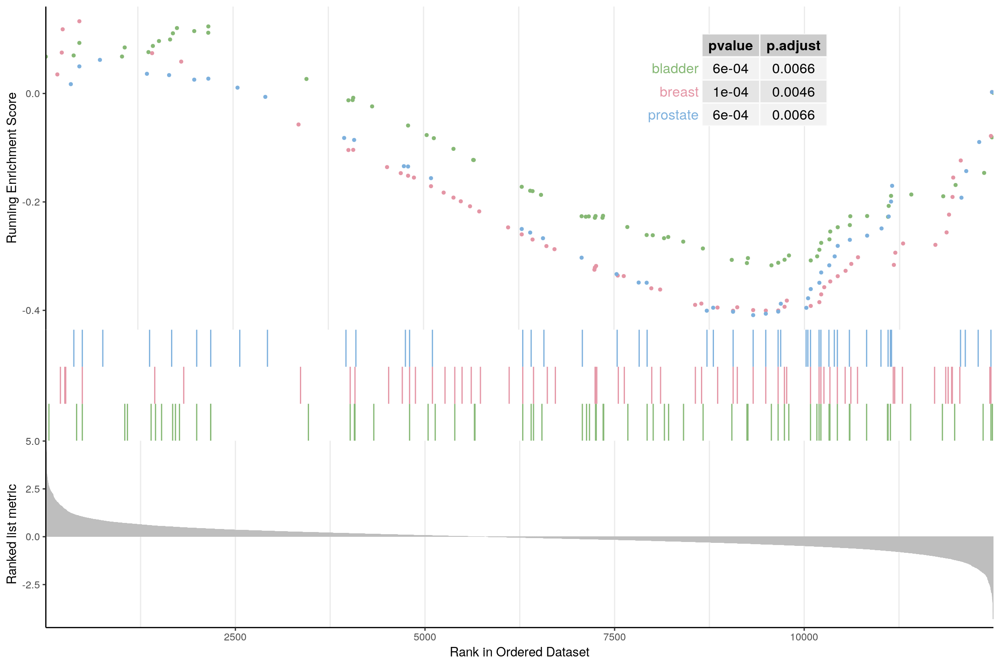
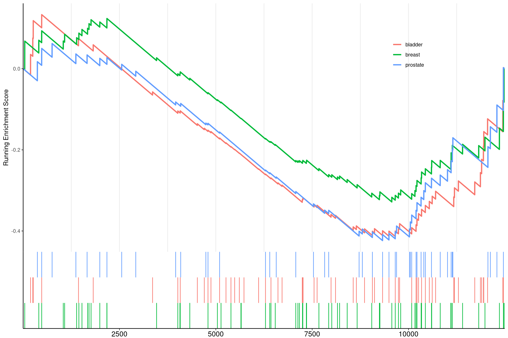
The gsearank function plot the ranked list of genes belong to the specific
gene set.
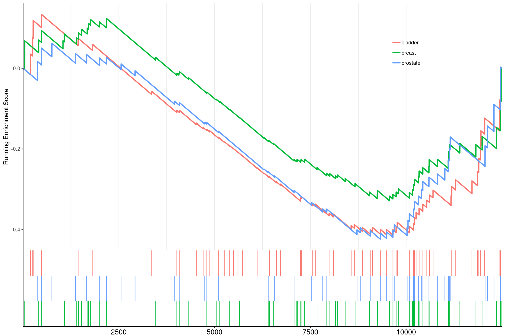
Multiple gene sets can be aligned using cowplot:
library(ggplot2)
library(cowplot)
pp <- lapply(1:3, function(i) {
anno <- edo2[i, c("NES", "pvalue", "p.adjust")]
lab <- paste0(names(anno), "=", round(anno, 3), collapse="\n")
gsearank(edo2, i, edo2[i, 2]) + xlab(NULL) +ylab(NULL) +
annotate("text", 0, edo2[i, "enrichmentScore"] * .9, label = lab, hjust=0, vjust=0)
})
plot_grid(plotlist=pp, ncol=1)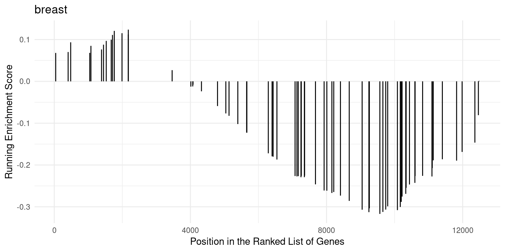
12.9 pubmed trend of enriched terms
One of the problem of enrichment analysis is to find pathways for further
investigation. Here, we provide pmcplot function to plot the number/proportion
of publications trend based on the query result from PubMed Central. Of course,
users can use pmcplot in other scenarios. All text that can be queried on PMC
is valid as input of pmcplot.
terms <- edo$Description[1:3]
p <- pmcplot(terms, 2010:2017)
p2 <- pmcplot(terms, 2010:2017, proportion=FALSE)
plot_grid(p, p2, ncol=2)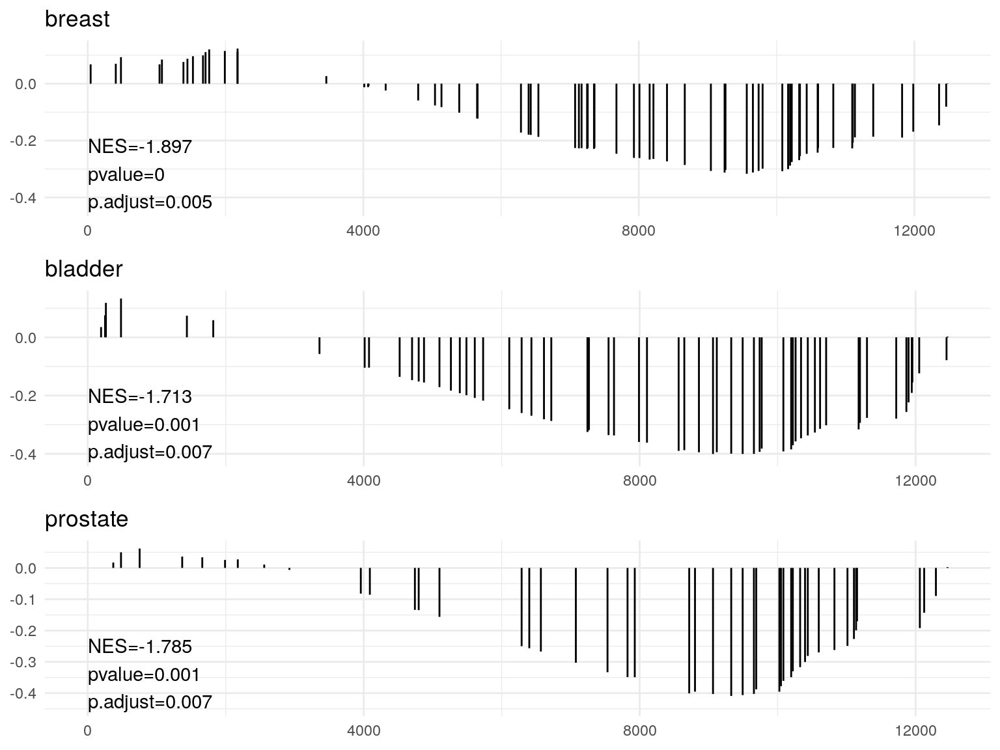
12.10 goplot
goplot can accept output of enrichGO and visualized the enriched GO induced graph.
12.11 browseKEGG
To view the KEGG pathway, user can use browseKEGG function, which will open web browser and highlight enriched genes.

12.12 pathview from pathview package
clusterProfiler users can also use pathview from the pathview(Luo and Brouwer 2013) to visualize KEGG pathway.
The following example illustrate how to visualize “hsa04110” pathway, which was enriched in our previous analysis.
library("pathview")
hsa04110 <- pathview(gene.data = geneList,
pathway.id = "hsa04110",
species = "hsa",
limit = list(gene=max(abs(geneList)), cpd=1))
For further information, please refer to the vignette of pathview(Luo and Brouwer 2013).
References
Luo, Weijun, and Cory Brouwer. 2013. “Pathview: An R/Bioconductor Package for Pathway-Based Data Integration and Visualization.” Bioinformatics 29 (14): 1830–1. https://doi.org/10.1093/bioinformatics/btt285.
Yu, Guangchuang, and Qing-Yu He. 2016. “ReactomePA: An R/Bioconductor Package for Reactome Pathway Analysis and Visualization.” Molecular BioSystems 12 (2): 477–79. https://doi.org/10.1039/C5MB00663E.
Yu, Guangchuang, Le-Gen Wang, Yanyan Han, and Qing-Yu He. 2012. “ClusterProfiler: An R Package for Comparing Biological Themes Among Gene Clusters.” OMICS: A Journal of Integrative Biology 16 (5): 284–87. https://doi.org/10.1089/omi.2011.0118.
Yu, Guangchuang, Li-Gen Wang, Guang-Rong Yan, and Qing-Yu He. 2015. “DOSE: An R/Bioconductor Package for Disease Ontology Semantic and Enrichment Analysis.” Bioinformatics 31 (4): 608–9. https://doi.org/10.1093/bioinformatics/btu684.